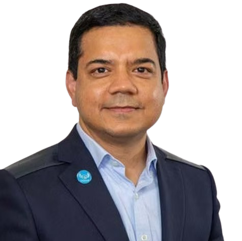
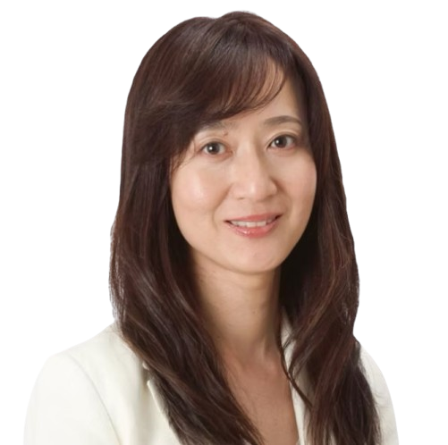
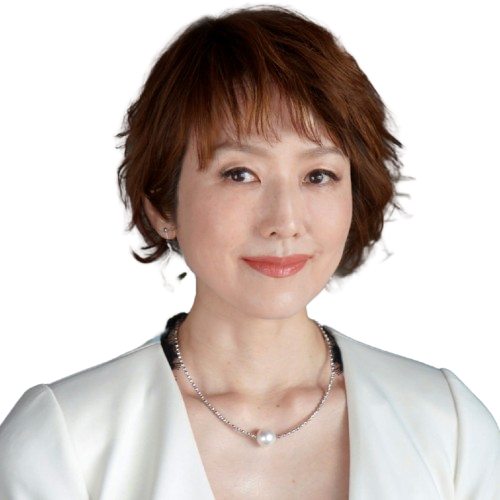
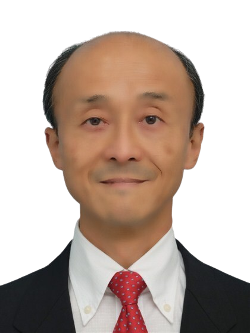
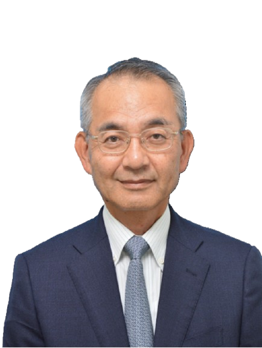
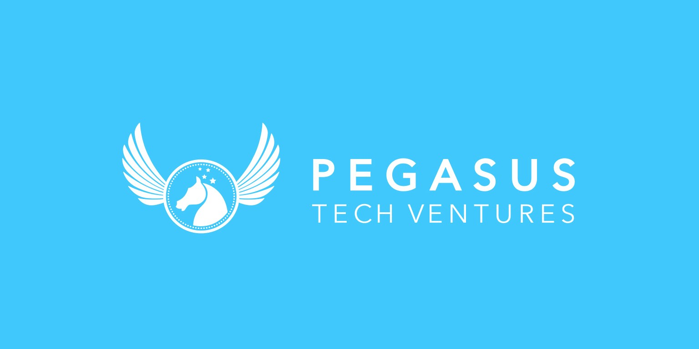
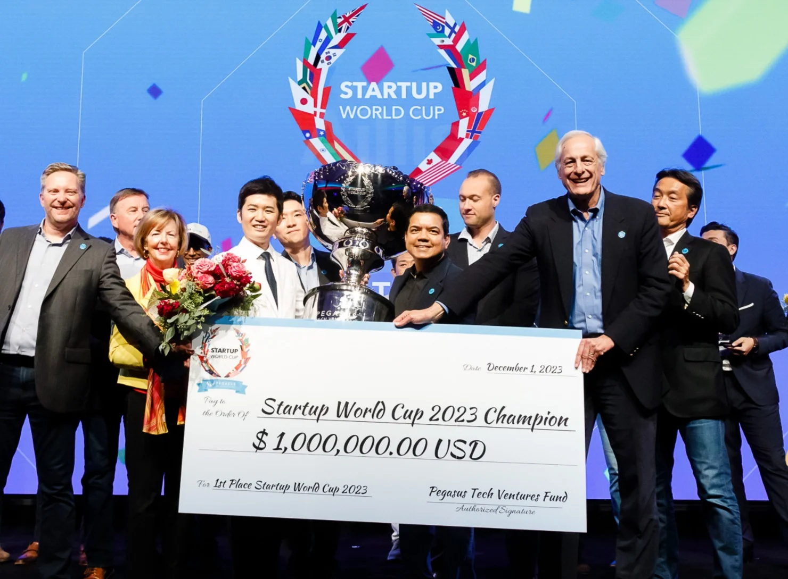

MISSION
変化するグローバル社会において、
企業の変革は不可欠です。
我々はシリコンバレーを拠点に、
スタートアップと大企業の架け橋として、
グローバルな成長とイノベーションを
支援します。
In an ever-changing global society, corporate transformation is essential. Based in Silicon Valley, we bridge startups and enterprises to drive global growth and innovation.
VISION
世界中の企業とスタートアップがつながり、
新たな価値が生まれる未来を目指します。
国や産業を越えた共創を通じて、
世界をリードするオープンイノベーション
プラットフォームを創造します。
We envision a future where enterprises and startups connect to create new value. Through cross-border and cross-industry collaboration, we build a world-leading open innovation platform.
VALUE
私たちは、すべてのステークホルダー
との信頼を基盤とします。
誠実さと説明責任を重視し、
高い倫理観のもと、
公正で正確な意思決定と実行を徹底します。
We build on trust with all stakeholders. With integrity and accountability, we uphold the highest ethical standards and execute with fairness and precision.
CULTURE
多様性を尊重し、
チームとして成果を追求します。
好奇心を持ち挑戦を恐れず、
結果にコミットし、一人ひとりの情熱で
組織の成長を加速させます。
We embrace diversity and pursue results as one team. With curiosity and boldness, we commit to outcomes and accelerate growth through individual passion.

会社概要 Company Overview
See more沿革 History
See moreコーポレートガバナンス Corporate Governance
See more会社概要 Company Overview
- 会社名
- ペガサス・テック・ホールディングス株式会社
- 設立日
- 2021年1月
- 本社所在地
- 東京都品川区西品川1-1-1
住友不動産大崎ガーデンワー９階トンネル東京 - 代表者
- 代表取締役社長 アニス・ウッザマン
- グループ構成
-
Pegasus Tech Ventures, Inc. (米国カリフォルニア州)
株式会社ペガサス・テック・ベンチャーズ・ジャパン（東京都）
Startup World Cup, Inc.（米国カリフォルニア州） - 事業内容
-
- ベンチャー企業に対する投資及び融資の紹介並びに経営の指導
- 企業の合併・提携、有価証券の譲渡に関する指導・仲介及び斡旋
- 経営コンサルティング業務
- 企業向け人材育成・教育事業
- Company Name
- Pegasus Tech Holdings K.K.
- Founded
- January 2021
- Headquarters
- 1-1-1 Nishi-Shinagawa, Shinagawa-ku, Tokyo
9F Sumitomo Fudosan Osaki Garden Tower, Tunnel Tokyo - Representative
- Anis Uzzaman, Representative Director, President & CEO
- Group Structure
-
Pegasus Tech Ventures, Inc. (California, USA)
Pegasus Tech Ventures Japan K.K. (Tokyo, Japan)
Startup World Cup, Inc. (California, USA) - Business Activities
-
- Investment in and financing introductions for venture companies, and management guidance
- Advisory, brokerage, and intermediary services for corporate mergers, alliances, and securities transfers
- Management consulting services
- Corporate talent development and educational programs
沿革 History
| 年月 Date | 概要 Overview |
|---|---|
| 2011年4月 April 2011 | 創業者であるアニス・ウッザマンが、アメリカ・カルフォルニア州にて1号ファンドを設立 Founder Anis Uzzaman established the first fund in California, USA. |
| 2012年3月 March 2012 | アメリカ・デラウェア州に有価証券等の投資及び保有、有投資事業組合の管理、投資一般に関するコンサルティング業務、スタートアップに関するイベント開催を事業目的としてベンチャーキャピタルを設立 Incorporated a venture capital firm in Delaware, USA, with the purpose of investing in and holding securities, managing investment partnerships, providing investment consulting, and hosting startup events. |
| 2015年2月 February 2015 | 東京都千代田区大手町に日本におけるマーケティング、ビジネスディベロップメント、ベンチャー企業ソーシング、投資、ポートフォリオ管理等を事業目的とした日本支社を設立 Established a Japan branch in Otemachi, Chiyoda-ku, Tokyo, with the mission of marketing, business development, venture sourcing, investment, and portfolio management in Japan. |
| 2017年5月 May 2017 | アメリカ・カリフォルニア州にスタートアップワールドカップの運営、実行、マーケティング、スポンサーシップを事業目的としたStartup World Cup, Inc.を設立 Incorporated Startup World Cup, Inc. in California, USA, dedicated to operating, executing, marketing, and sponsoring the Startup World Cup. |
| 2017年5月 May 2017 | 第1回スタートアップワールドカップの開催 Held the 1st Startup World Cup. |
| 2019年11月 November 2019 | 株式取得の方法により、Pegasus Tech Ventures, Inc. が、Startup World Cup, Incを100%子会社化 Pegasus Tech Ventures, Inc. made Startup World Cup, Inc. a wholly-owned subsidiary through share acquisition. |
| 2021年1月 January 2021 | 東京都品川区西五反田に、グループ経営体制を構築する目的で、ペガサス・テック・ホールディング株式会社を設立 Established Pegasus Tech Holdings Co., Ltd. in Nishi-Gotanda, Shinagawa-ku, Tokyo, to build a group management structure. |
コーポレート・ガバナンス Corporate Governance
当社グループは、経営の最適化により企業価値を長期的に高め、さらに、株主に対する積極的な企業情報の提供により企業の透明性を高め、株主との間に長期的信頼関係を構築していくこと等を当社のコーポレート・ガバナンスに関する基本的な考え方として、株主の権利を重視し、また、社会的信頼に応え、持続的成長と発展を遂げていく事が重要であるとの認識に立ち、コーポレート・ガバナンスの強化に努めております。
当社グループは、会社法に規定する機関として取締役会、監査役会、会計監査人を設置するとともに、当社グループのリスク方針・対策を決定するグループリスク管理委員会を毎月１回以上開催しております。
a．取締役会
当社の取締役会は、取締役３名（うち社外取締役０名）で構成され、代表取締役が議長を務め、構成員の氏名につきましては（２）「役員の状況」に記載のとおりであります。取締役会は、当社グループの経営の意思決定及びの業務執行を決定し、取締役の職務を監督する権限を有しております。社内取締役は、代表権を持つ代表取締役、投資部門、管理部門の責任者をそれぞれ１名ずつ置いております。
（社外取締役を選任したら、下記を記載する予定です）
社外取締役には、当社の属するファンド・CVC業界への深い造詣を有する者のみならず、ビジネスそのものについての理解と経験を有した人物を選任することで、広い視野に基づいた経営意思決定と社外からの経営監視を可能とする体制の構築を推進しております。
なお、取締役会は基本的に月１回以上開催され、取締役会を構成するメンバーは全員出席しております。
b．監査役
監査役は、２名で構成され、株主総会や取締役会への出席や子会社への往査などに監査役会議事録を作成し、その内容については、適時取締役会に報告することで、業務改善を促しております。
また、監査役は、株主総会や取締役会への出席や、取締役・従業員・会計監査人からの報告収受など法律上の権利行使のほか、常勤監査役は、重要な経営会議への出席や事業所への往査など実効性のあるモニタリングに取り組んでおります。監査役は、基本的に社外出身者から構成されており、企業経営や会計に知識と経験を有する人物を株主総会で選任しております。
なお、監査役による協議会は基本的に月１回以上開催され、監査役全員が出席しております。監査役協議会開催後は、監査役協議会議事録を作成し、その内容については、適時取締役会に報告することで、業務改善を促しております。
c．監査役会
監査役会は、監査役３名（うち社外監査役２名）で構成され、議長は常勤監査役である河邉昭浩が務めており、構成員については（２）「役員の状況」に記載のとおりであります。監査役会は、ガバナンスのあり方とその運営状況を監視し、取締役の職務執行を含む日常的活動の監査を行っております。
なお、監査役会は基本的に月１回以上開催され、監査役会を構成するメンバーは全員出席しております。監査役会開催後は、監査役会議事録を作成し、その内容については、適時取締役会に報告することで、業務改善を促しております。
d．会計監査人
当社は、EY新日本有限責任監査法人と監査契約を締結し、独立の立場から会計監査を受けております。
e．グループリスク管理委員会
グループリスク管理委員会は当社グループの経営上の課題を共有し、対策や検討を行う事を目的として、月１回程度、当社の取締役と各部門責任者全員が集まる形式で開催しています。業務上の協議必要事項については、会議前に項目を共有し、会議当日は協議に徹底する事ができるよう、工夫しております。また、会議結果については、出席者全員で共有し、進捗管理をおこなっております。
当社グループでは、コーポレート・ガバナンスの仕組みは、その時点での会社の目的達成に最適と思われる仕組みを採用する事としています。従って、社会環境・法的環境の変化に伴って適時見直していく事としております。
当社グループは、未上場企業への投資を軸とした、リスクマネーを供給する専門性の高い事業を行っております。こうした事業特性および人員数、事業規模等に照らし、取締役会はコンパクトな人員数で迅速かつ的確な意思決定に努めております。
こうした点を勘案し、社外監査役を含めた監査役による経営の監視及び監督機能を適切に機能させることで、経営の健全性と透明性を確保しております。また、取締役会による業務執行の決定と、経営の監視及び監督機能を向上させるため、社外取締役の選任を予定しております。
当社は、社外取締役による業務執行から独立した監視及び監督機能と、監査役並びに監査役会による当該機能を中心としたガバナンス体制が適切であると判断しており、監査役会設置会社を選択する予定です。
内部統制システムの整備の状況
当社および当社子会社（以下、「当社グループ」という。）の業務の適正を確保するための内部統制システムならびに当社監査役会の職務の執行のために必要な体制を以下のように整備し、各種社内規程等を整備するとともに、規程等遵守の徹底を図り内部統制システムが有効に機能する体制づくりに努めております。また、役職員の職務遂行に対し、監査役及び内部監査担当者がその業務執行を監視し、随時必要な監査手続を実施しております。
(ⅰ) 取締役、使用人の職務の執行が法令及び定款に適合することを確保するための体制
取締役に対しては、各監査役及び監査役会が職務執行を法令及び定款と照らして監視を行うとともに、決裁審議において非適合の事象を確認の際は、意見を行い、執行前に防止する体制となっております。また、定款に適合しない行為が発生することを防止するため、決裁権限を「職務権限規程」で定め、執行前の段階で稟議等による審査を受けなければ執行できない体制としております。
使用人に対しては、会社情報の不正な使用・開示・漏洩を防止し、機密情報及び個人情報を適切に取り扱うために「機密情報管理規程」および「個人情報管理規程」を整備・運用しております。
(ⅱ) 取締役の職務の執行に係る情報の保存及び管理に関する体制
執行に係る情報については、「職務権限規程」に基づき、稟議書が作成され、当該稟議書は「文書管理規程」にて、その重要度に応じて、保存されております。この書類の管理は、「職務分掌規程」にて、管理本部が行っております。
(ⅲ) 損失の危険の管理に関する規程その他の体制
損失の危険の管理に関する規程は、「リスクマネジメント・コンプライアンス規程」を定め、この運用を行っております。当社代表取締役及び代表取締役に選任された9名の委員で構成されているリスクマネジメント・コンプライアンス委員会において、リスクの洗い出しとその評価を行い、その対応策を検討・実施決定を図っております。また、未知の新たなリスクについては、その事象及び確認されているリスクが顕在化あるいはその兆候が発生した折りには、当社役員及び関係会社の代表取締役は当会議に報告し、現状対応策における不足の有無を確認し、不足の有る場合は、その対処を検討・実施する体制となっております。
(ⅳ) 取締役の職務の執行が効率的に行われることを確保するための体制
「中期経営計画」及び「単年度予算」を策定し、適正に経営管理を行う体制としております。現在は、取締役の効率性が損なわれる状況とはなっておりませんが、今後の事業拡大に伴い、取締役会の決議数が増加する等が予測されるようになった場合は、業務執行権を持つ役員で一定の事項の決定等を委任する体制に移行していくことを検討しております。
(ⅴ) 当社並びに関係会社から成る企業集団における業務の適正を確保するための体制
内部監査チームを設置するとともに、「内部監査規程」を設けて業務の適正を確保しております。内部監査チームは、被監査部門から独立した部門として、監査の事務を司る部門としております。当該部門は、内部監査規程に基づき監査を行い、その結果を代表取締役及び監査役会に報告しております。
(ⅵ) 監査役がその職務を補助すべき使用人を置くことを求めた場合における当該使用人に関する事項及びその使用人の取締役からの独立性に関する事項
監査役が補助すべき使用人を置くことを求めた場合は、監査役補助員として使用人を置くこととします。当該使用人は、監査役の指示によりその業務を行うこととしております。当該使用人の人事考課・異動その他の人事に関する事項の決定は、事前に常勤監査役の同意を得ることにより、当該使用人の独立性を確保することとしております。
(ⅶ) 取締役及び使用人が監査役に報告するための体制及びその他監査役への報告に関する体制
代表取締役及び取締役は、取締役会その他の監査役が出席する重要な会議において、随時その職務の執行状況等を速やかに報告することとしております。取締役及び使用人は当社に著しい損害を及ぼす事実、不正行為、又は法令に違反する重大な事実を発見したときは、当該事実について監査役に速やかに報告することとしております。
(ⅷ) その他監査役の監査が実効的に行われることを確保するための体制
監査役は、監査を実行的に行うために必要と判断した時は、取締役及び使用人に対し職務の執行状況について報告をいつでも求めることができます。報告を求められた取締役及び使用人は、その求めに応じて速やかに報告しなければならない体制としております。監査役は取締役会のほか、重要な会議と監査役が判断した会議には出席をし、必要に応じて意見を述べることができるとともに、議事録その他の関係書類を閲覧できるものとしております。
(ⅸ) 財務報告の信頼性を確保するための体制
財務報告の信頼性を確保するために、代表取締役の指示のもと、金融商品取引法に規定された財務報告に係る内部統制が有効に行われる体制を構築し、その仕組みが適正に機能することを継続的に評価し、不備があれば必要な是正を行っております。
(ⅹ) 反社会的勢力との取引排除に向けた基本的考え方及びその整備状況
当社グループは、「反社会的勢力対応規程」を定め、運用することで、社会の秩序、企業の健全な事業活動の脅威となる反社会的な団体・個人とは一切の関係を持たず、一切の利益を供与しません。具体的には、「反社会的勢力からの不当要求に対する対応マニュアル」を定め、公益財団法人暴力団追放運動推進都民センターに加盟しており、各団体の会報、各団体が主催する研修会等への参加・最新情報の収集を行っていくことを予定しております。また、不当要求等が生じた場合は、顧問弁護士、所轄警察署等と連携して適切な措置を講じてまいります。
リスク管理体制の整備の状況
当社は、④(ⅲ)に記載した通り、代表取締役及び代表取締役に選任された３名の委員で構成されているリスクマネジメント・コンプライアンス委員会がリスク評価を行いその結果を取締役会にて報告する体制を構築すべく、整備を行っております。また、顕在化しつつあるリスクについては、その予兆・兆候が確認された段階で、リスクマネジメント・コンプライアンス委員会が取締役会に報告しております。報告を受けた取締役会では、リスクの事象実態・リスク測定の在り方・リスクへの対処方法の適正を確認し、その実施の可否を決裁することにより、リスク管理を行っております。
当社の取締役の選任決議について、議決権を行使することができる株主の議決権の３分の１以上を有する株主が出席し、その議決権の過半数をもって行う旨、及びその選任決議は累積投票によらないものとする旨を定款に定めております。
当社は、会社法第427条第１項の規定に基づき、取締役（業務執行取締役等であるものを除く。）及び監査役との間において、会社法第423条第１項の損害賠償責任を限定する契約を締結しております。当該契約に基づく損害賠償責任限度額は、法令が定める限度額の範囲内としております。なお、当該責任限定が認められるのは、当該取締役（業務執行取締役等であるものを除く。）または監査役が責任の原因となった職務の遂行について善意でかつ重大な過失がないときに限られるものとしております。
当社は、会社法第309条第２項に定める決議について、定款に別段の定めがある場合を除き、議決権を行使することができる株主の議決権の３分の１以上を有する株主が出席し、その議決権の３分の２以上をもって行う旨を定款で定めております。これは、株主総会における特別決議定足数を緩和することにより、株主総会の円滑な運営を行うことを目的とするものであります。
The Pegasus Group aims to enhance corporate value sustainably over the long term through optimized management, and to build long-term trust with shareholders by actively providing transparent corporate information. Based on the recognition that respecting shareholders' rights, meeting society's trust, and achieving sustainable growth and development are essential, the Group is committed to strengthening its corporate governance.
The Pegasus Group has established the bodies required under the Companies Act — a Board of Directors, a Board of Auditors, and an Accounting Auditor — and holds the Group Risk Management Committee, which determines the Group's risk policies and countermeasures, at least once a month.
a. Board of Directors
The Board of Directors consists of three directors (including zero outside directors), with the Representative Director serving as chairperson. The names of the members are as stated in (2) "Status of Officers." The Board of Directors has the authority to make management decisions for the Pegasus Group and to supervise directors' execution of duties. Internal directors include one Representative Director with the right of representation, and one person each responsible for the investment and administrative divisions.
(The following will be added upon appointment of outside directors.)
By appointing individuals with not only deep expertise in the fund and CVC industry but also broad business experience and understanding as outside directors, the Company promotes a governance structure that enables management decision-making from a wide perspective and external oversight of management.
The Board of Directors meets at least once a month, and all members are in attendance.
b. Auditors
The auditors consist of two members, who attend general meetings of shareholders and board meetings, conduct on-site audits of subsidiaries, and prepare audit meeting minutes. They report the content to the Board of Directors in a timely manner to encourage business improvements.
In addition to exercising legal rights such as attending general meetings of shareholders and board meetings and receiving reports from directors, employees, and accounting auditors, the full-time auditor attends important management meetings and conducts on-site audits for effective monitoring. Auditors are generally appointed from external sources, and individuals with knowledge and experience in corporate management and accounting are elected at the general meeting of shareholders.
Auditor conferences are held at least once a month, and all auditors are in attendance. Minutes are prepared after each meeting and reported to the Board of Directors in a timely manner to encourage business improvements.
c. Board of Auditors
The Board of Auditors consists of three auditors (including two outside auditors), with full-time auditor Akihiro Kawabe serving as chairperson. Members are as stated in (2) "Status of Officers." The Board of Auditors monitors the state of governance and its operations, and conducts audits of daily activities including directors' execution of duties. The outside auditors are ●● and ●● (e.g., a certified public accountant and an attorney), each conducting management oversight from the perspective of their respective professional ethics.
The Board of Auditors meets at least once a month, and all members are in attendance. Minutes are prepared after each meeting and reported to the Board of Directors in a timely manner.
d. Accounting Auditor
The Company has entered into an audit agreement with Ernst & Young ShinNihon LLC and receives independent accounting audits.
e. Group Risk Management Committee
The Group Risk Management Committee is held approximately once a month, attended by all directors and department heads, for the purpose of sharing management issues across the Group and deliberating on countermeasures. Agenda items are shared in advance so that participants can focus fully on discussion during the meeting. Results are shared with all attendees and progress is managed accordingly.
The Pegasus Group adopts the corporate governance structure it considers optimal for achieving the Company's objectives at any given time, and reviews it as necessary in response to changes in the social and legal environment.
The Pegasus Group conducts a highly specialized business centered on supplying risk capital through investment in unlisted companies. In light of these business characteristics, the number of personnel, and the scale of operations, the Board of Directors works to make swift and accurate decisions with a compact membership.
Considering these factors, the Company ensures the soundness and transparency of management by appropriately functioning the monitoring and supervisory role of the auditors, including outside auditors. The Company also plans to appoint outside directors to further strengthen the Board's decision-making and oversight functions.
The Company has determined that a governance structure centered on the monitoring and supervisory functions of outside directors independent from business execution, as well as the auditors and the Board of Auditors, is appropriate, and plans to adopt the Company Auditor System.
Status of Internal Control System Development
In order to ensure the appropriateness of operations of the Company and its subsidiaries (hereinafter "the Group"), the Company has established an internal control system and the structures necessary for the Board of Auditors to execute its duties, developed various internal regulations, and is working to ensure thorough compliance so that the internal control system functions effectively. Auditors and internal audit personnel monitor the execution of duties by officers and employees and conduct necessary audit procedures as appropriate.
(ⅰ) System to ensure that directors' and employees' execution of duties complies with laws and regulations and the Articles of Incorporation
Regarding directors, each auditor and the Board of Auditors monitors execution of duties against laws and regulations and the Articles of Incorporation, expressing opinions when non-compliance is identified during deliberations to prevent such acts before execution. Decision-making authority is defined in the "Authority Regulations," and internal approval must be obtained before execution to prevent non-compliance with the Articles of Incorporation.
Regarding employees, the "Confidential Information Management Regulations" and "Personal Information Management Regulations" have been established and are in operation to prevent unauthorized use, disclosure, or leakage of company information, and to handle confidential and personal information appropriately.
(ⅱ) System for the preservation and management of information related to directors' execution of duties
Information related to execution is organized into approval documents based on the "Authority Regulations," which are preserved according to their importance under the "Document Management Regulations." Management of these documents is carried out by the Administrative Division as defined in the "Division of Duties Regulations."
(ⅲ) Regulations and other systems for managing the risk of loss
Regulations for managing the risk of loss are defined in the "Risk Management and Compliance Regulations." The Risk Management and Compliance Committee, consisting of the Representative Director and nine appointed committee members, identifies and evaluates risks and deliberates on countermeasures. For new or emerging risks, officers and representative directors of related companies report to the Committee to confirm the sufficiency of current measures and implement responses as needed.
(ⅳ) System to ensure efficient execution of directors' duties
A medium-term management plan and annual budget are formulated and appropriate management control is maintained. Should the volume of Board resolutions increase with future business expansion, the Company is considering transitioning to a system where certain matters are delegated to officers with operational authority.
(ⅴ) System to ensure the appropriateness of operations of the corporate group
An internal audit team has been established, and "Internal Audit Regulations" are in place to ensure operational appropriateness. The internal audit team operates as a division independent from the audited divisions, conducts audits based on internal audit regulations, and reports results to the Representative Director and the Board of Auditors.
(ⅵ) Matters relating to employees to assist auditors, and their independence from directors
In the event that an auditor requests the placement of employees to assist in their duties, such employees shall be assigned as auditor assistants and shall perform their duties under the auditor's direction. Their independence from directors shall be secured by obtaining the advance consent of the full-time auditor regarding personnel evaluations, transfers, and other personnel matters.
(ⅶ) System for directors and employees to report to auditors
The Representative Director and directors shall promptly report on the status of their execution of duties at board meetings and other important meetings attended by auditors. Directors and employees shall promptly report to auditors when they discover facts that could cause significant harm to the Company, acts of misconduct, or serious violations of laws and regulations.
(ⅷ) Other systems to ensure effective auditing by auditors
When an auditor deems it necessary for effective auditing, the auditor may request reports from directors and employees on the status of their execution of duties at any time. Those requested must promptly comply. Auditors may attend the Board of Directors and other important meetings, express opinions as necessary, and review minutes and other related documents.
(ⅸ) System to ensure the reliability of financial reporting
To ensure the reliability of financial reporting, under the direction of the Representative Director, a system is established to effectively carry out internal controls related to financial reporting as prescribed by the Financial Instruments and Exchange Act. The effectiveness of this system is continuously evaluated and any deficiencies are corrected as necessary.
(ⅹ) Basic policy and measures to exclude transactions with antisocial forces
The Pegasus Group has established and operates the "Antisocial Forces Response Regulations" to ensure that we have no relationship with antisocial organizations or individuals that threaten societal order and sound business activities, and provide no benefits to them. We have established a response manual for unreasonable demands, are a member of the Tokyo Metropolitan Citizens' Center for the Promotion of Violence Exclusion Campaigns, and plan to collect the latest information through member bulletins and training sessions. In the event of unreasonable demands, we will take appropriate measures in cooperation with our legal counsel and the relevant police authorities.
Status of Risk Management System Development
As described in ④(ⅲ), the Company is building a system in which the Risk Management and Compliance Committee conducts risk assessments and reports the results to the Board of Directors. For emerging risks, the Committee reports to the Board of Directors when signs thereof are confirmed. Upon receiving such reports, the Board confirms the nature of the risk, the appropriateness of risk measurement, and the suitability of countermeasures, and approves their implementation to manage risk.
The Company's Articles of Incorporation stipulate that resolutions for the appointment of directors shall be passed by a majority of the voting rights of shareholders present at a meeting attended by shareholders holding at least one-third of the voting rights of shareholders entitled to exercise their voting rights, and that such resolutions shall not be made by cumulative voting.
Based on the provisions of Article 427, Paragraph 1 of the Companies Act, the Company has entered into agreements with directors (excluding executive directors, etc.) and auditors to limit their liability for damages under Article 423, Paragraph 1 of the Companies Act. The limit of liability under such agreements is within the limit prescribed by law. The limitation of liability is recognized only when the director or auditor acted in good faith and without gross negligence in connection with the duties that caused the liability.
The Company stipulates in its Articles of Incorporation that, unless otherwise provided, the resolutions specified in Article 309, Paragraph 2 of the Companies Act shall be passed by two-thirds or more of the voting rights of shareholders present at a meeting attended by shareholders holding at least one-third of the voting rights of shareholders entitled to exercise their voting rights. This is intended to facilitate smooth operation of the general meeting of shareholders by relaxing the quorum requirements for special resolutions.
経営陣紹介 Management

代表取締役社長 Representative Director, President & CEO
アニス・ウッザマン Anis Uzzaman
取締役/パートナー Board Member / Partner
スティーブ・ペイン Steve Payne

取締役/COO Board Member / COO
秋元 春美 Harumi Akimoto
社外取締役 External Board Member
石黒 不二代 Fujiyo Ishiguro

監査役 Auditor
金野 志保 Shiho Konno

常勤監査役 Full-time Auditor
河邉 昭浩 Akihiro Kawabe

監査役 Auditor
高野 善晴 Yoshiharu Takano
事業概要 Business Overview

コーポレートベンチャーキャピタル Corporate Venture Capital
企業のオープンイノベーションのための戦略的リターンを目指すプライベートファンド運用を行っています。 Private funds seeking strategic returns for corporate open innovation.

コンサルティングサービス Consulting Service
企業のイノベーション活動を支援するコンサルティングサービスを提供しています。 Consulting services supporting corporate innovation initiatives.

デューデリジェンスソフトウェア Due Dilligence Software
業界初となるデューデリジェンスを自動化するソフトウェアを提供しています。 Industry-first software that automates the due diligence process for startups and investors.

スタートアップワールドカップ Startup World Cup
世界のスタートアップエコシステム構築を目指す、世界最大級のグローバルピッチコンテストです。 A global startup pitch competition aimed at building the world's startup ecosystem.